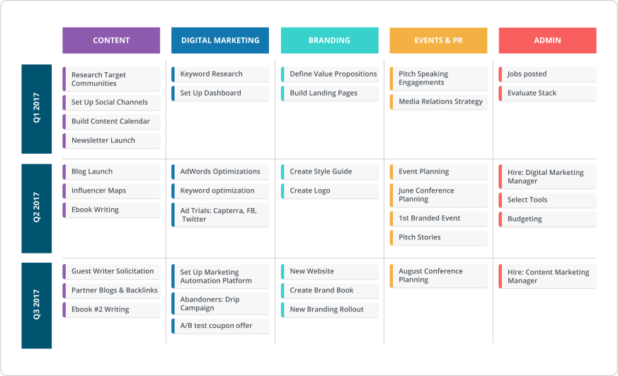
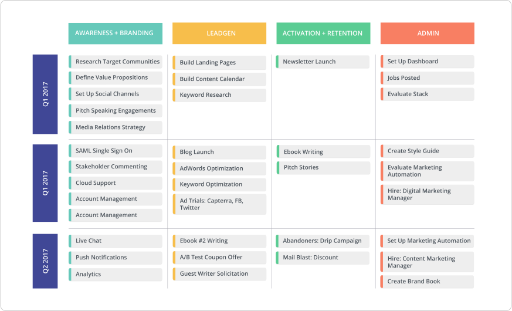
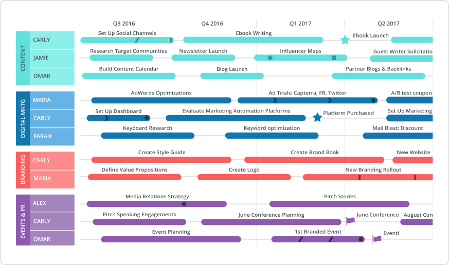
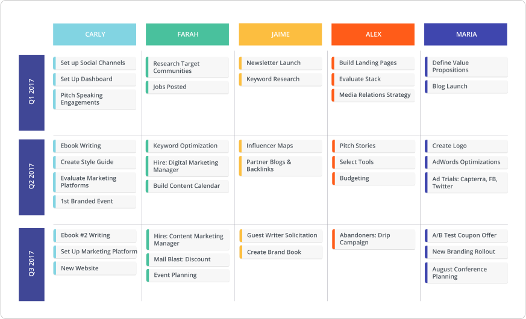

Any half-decent marketing is essentially storytelling.
As a marketer, everything you create needs to tell the story of your product and the value it offers your users. That’s why roadmaps are such a natural fit for marketing teams. A marketing roadmap tells the story of your marketing strategy.
As leader of the marketing team here at Roadmunk, I leverage a few iterations of my roadmap to communicate our team’s initiatives across our entire company. We obviously use a ton of tactical software, but I go back to my marketing roadmap every week to regroup on the big picture. More concretely, I use it in a few different contexts:
- I present our roadmap at our monthly town hall meetings, where our whole company can align on what our marketing team has in the pipe.
- I show different pivots during strat alignment sessions to get buy-in from our executive team.
- I use project-specific roadmaps to plan feature releases or big initiative launches.
- I also use our roadmapping tool for lightweight resource planning.
I thought it would be cool to give a window into my process and how I use different versions of my roadmap. For this exercise, I’m using our marketing roadmap template, which is accessible within Roadmunk. (And as a side note for non-marketers, we also have a wide selection of roadmap templates that you can check out in-app or on our website.)
K, let’s go. 💨🚲
If you're wondering what tool you should use to create your roadmap, we've got a guide for that here.
The theme-based marketing roadmap
This is how I actually structure the roadmap I show in our town hall meetings. After trying a few variations, I decided that organizing quarterly by theme was clearest. Here’s why:
- Organizing by category was dead simple for everyone to understand. Even if you’re not a marketer, everyone knows who does digital marketing, who does content, who does design. It’s a crystal-clear way to orient the whole company to the activities of different members of our marketing team.
- I tried a monthly roadmap, but it was just too constricting (and unrealistic) for our growing team at a growing company. Going quarterly gave us leeway for bigger projects, while offering some structure around time.

Build your own version of a theme-based marketing roadmap here.
The goal-based marketing roadmap
When I’m doing strategy alignment with other leaders in our organization, I usually start by showing my category roadmap and explaining, “This is what we’re going to do.” Then I switch over to my goal-oriented roadmap and show, “This will be the impact of each of those projects.”
Our team evaluates success across a few different metrics, including generating qualified leads, building awareness for our company, and supporting sales to convert free trial users to customers. The goal-oriented marketing roadmap shows how you’re going to distribute resources to accomplish different types of goals.

Using Roadmunk, it’s really easy to maintain two views that you can switch between in meetings. This is a screenshot of my actual 'Views' drop-down for my marketing roadmap inside Roadmunk. Each view pulls from the same data set. It’s the same data, just structured differently—so maintaining each view is not finicky. During meetings, I’ll often pivot between different views to give the full picture of our marketing activities.
Get goals-y by creating your own goals-based marketing roadmap here.
The “we got deadlines” marketing roadmap
Timeline is not my go-to marketing roadmap, but I do find it helpful (slash, sanity-saving??) when we’re rallying to a deadline with a particular date stamp. When we released the new Roadmunk, I plotted every single element of the launch plan on a timeline roadmap, so we could make sure we’d resource correctly to complete each step before launch.
The marketing roadmap example below is probably more typical for process-driven teams that work on timelines. It shows a variety of marketing initiatives evolving over time, with projects assigned to particular team members. This is especially useful for teams that work with long (but strict) lead times.

Process-oriented marketing teams, this marketing roadmap template is available here.
The “who’s doing what” marketing roadmap
You may have noticed the “by person” view in the screenshot of my views tab above. When I’m doing quarterly planning, I’ll usually create a person-by-person breakdown of my roadmap. This ensures we have the resources to execute on our projects—and make sure no one is going to be wayyy over-burdened. This is also how I validate new hires: determining which projects will make the biggest impact towards hitting our goals, then visualizing what resources we need to get there.

In a case like this, I can quickly see that Jamie doesn’t have much in her pipe. Meanwhile, Carly might be maxed out. Resourcing isn’t my primary purpose for building a roadmap, but it’s an easy way to get a snapshot of what’s happening.
Construct your own interpretation of the above marketing roadmap by going here.
These examples show the four key ways I currently build my marketing roadmap. If you’re curious to try it for yourself, check out our roadmap template library to get started. Happy roadmapping! 😀